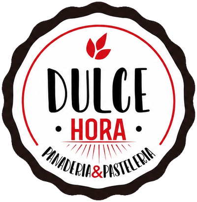
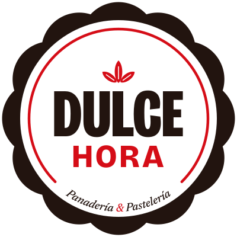
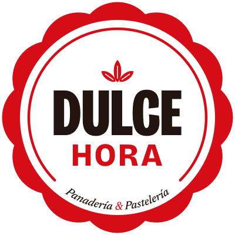
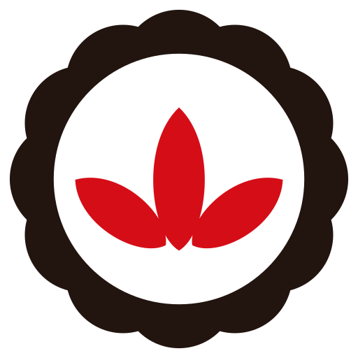
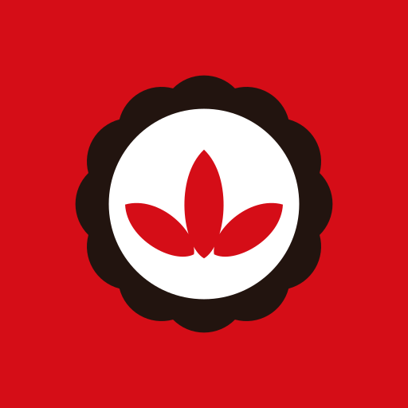
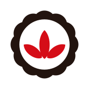

El sello de Dulce Hora, redibujado
Evolución del sello rojo vigente para que funcione desde un favicon de 16 px hasta un cartel. Conserva la ramita, el arco rojo y el borde ondulado; ordena todo lo demás. Mientras no lo apruebes, el sitio lo usa como identidad provisional.
Antes y después


Prueba de reducción
Los mismos archivos achicados por el navegador. A 32 px y menos el sello completo deja de leerse en cualquier versión: ahí entra el isotipo, que es el favicon.

Sobre los tres fondos de la marca
Harina: el fondo dominante. Festones en Tostado.
Rojo: la firma pasa a Harina; el sello se apoya entero, como un sticker.

Tostado: los festones pasan a Rojo para que el borde no se pierda.
El sistema
Sello
La pieza principal. Hero, pie de página, packaging. Desde 64 px.
Firma horizontal
Isotipo + DULCE HORA a lo ancho. Header, menú, documentos.
Isotipo
Festones y ramita. Favicon, avatar, detalles chicos.
Monograma DH (alternativa)
Variante del isotipo con iniciales. Hoy no se usa; queda a tu elección.



Íconos de la app y favicon
512 y 192 para Android, maskable sobre Rojo, 180 para iOS, SVG e ICO 32.
Qué cambia
- El borde ondulado irregular pasa a 12 festones regulares: las horas del reloj, la docena de facturas.
- El arco rojo interior queda abierto entre las 4:30 y las 7:30, como la esfera de un reloj; en la web se dibuja al cargar.
- DULCE deja la letra a mano por Bricolage Grotesque condensada y gruesa, con kerning ajustado. HORA va ancha y espaciada, en Rojo.
- El descriptor gana tildes y un ampersand rojo: Panadería & Pastelería, en Newsreader itálica.
- Salen el abanico de rayos y los dos puntos, que a tamaño chico se vuelven ruido.
- Todo es vector real: un solo juego de archivos genera el sitio, los favicons y la 404.
Qué se conserva
- El sello redondo con borde ondulado en Tostado, como la blonda de una bandeja.
- La ramita roja de tres hojas, ahora con nervaduras blancas.
- El arco rojo interior.
- La jerarquía DULCE (grande, oscuro) sobre HORA (rojo).
- El rojo exacto del logo, #D50D17, que pasa a ser el rojo de toda la web.
Para decidir con la marca
- Aprobar el sello o pedir ajustes. Hasta entonces es provisional.
- Isotipo con ramita o monograma DH para el favicon.
- Si existen los vectoriales originales, compararlos antes de cerrar.
- Letra de DULCE: condensada geométrica (propuesta) o una más caligráfica, más cerca de la actual.